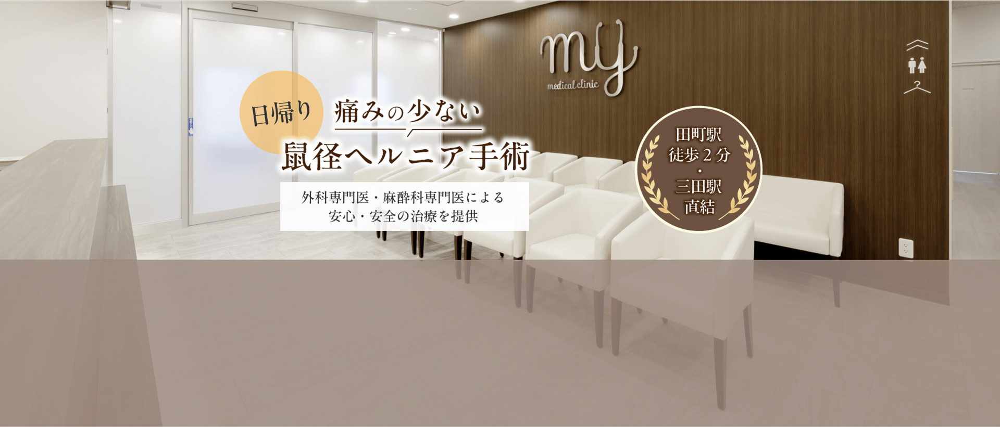
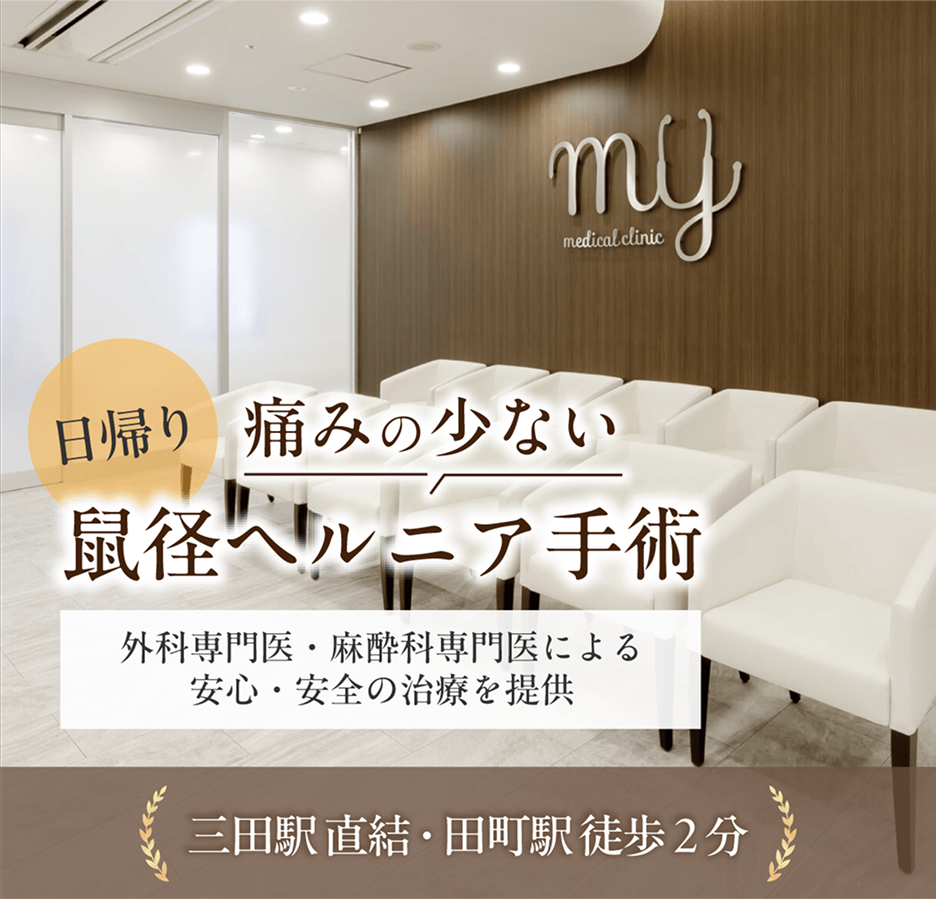
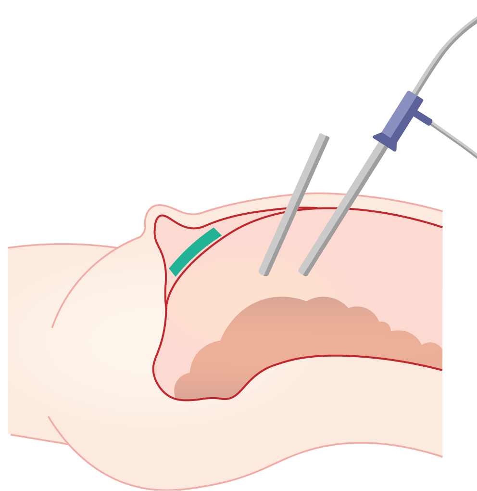
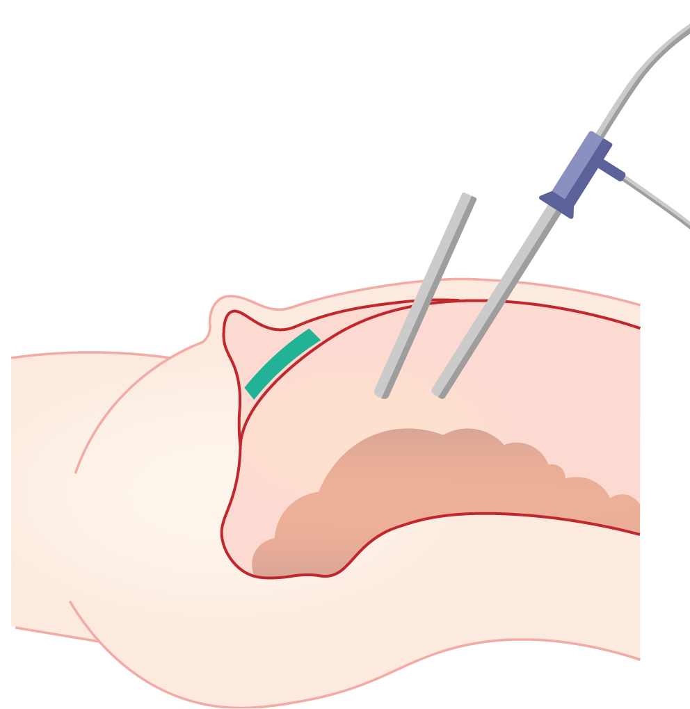
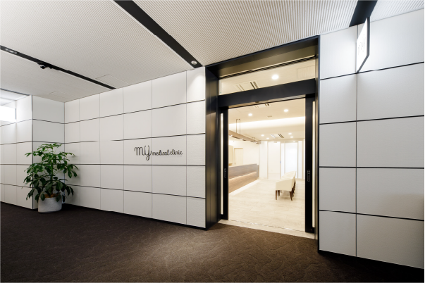
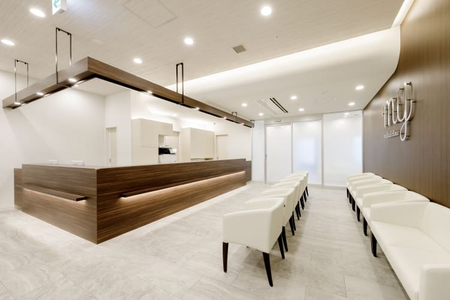
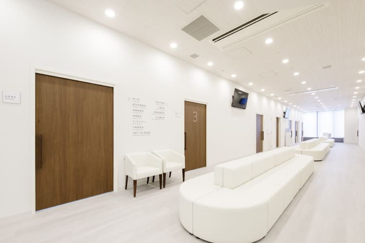
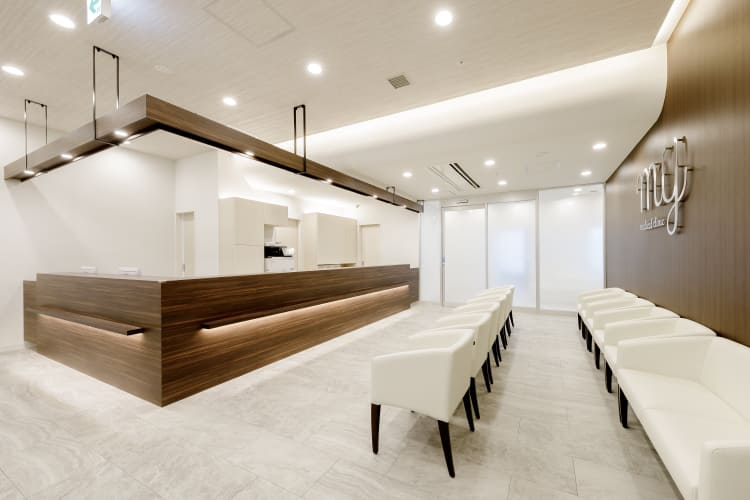
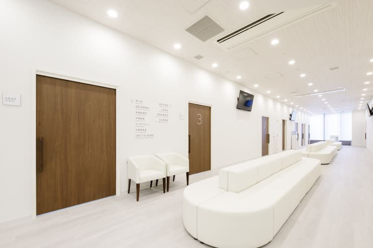

 

鼠径ヘルニアとは？
こんな症状でお悩みはありませんか？


 立ち仕事や重いものを持つと違和感や痛みがある
立ち仕事や重いものを持つと違和感や痛みがある
下腹部が膨らむような感覚がある
違和感を放置して悪化が心配
立っていると下腹部の左右どちらかに腫れができ仰向けになると引っ込むことがある
鼠径ヘルニアとは？
鼠径ヘルニア ( 脱腸 ) とは、足の付け根部分の鼠径部にできるヘルニアの総称のことです。 腸やその腸を覆う脂肪組織が本来の位置から飛び出した状態のことで、危険な状態 ( 嵌頓 ) になる前に早期治療をお勧めしております。 鼠径ヘルニアの手術は年間15万件以上手術が行われており、男性のほうが発症数は多い(約8割)ですが、女性がかかっても不思議なことはありません。
鼠径ヘルニアの3つのタイプ
鼠径ヘルニア（脱腸）は、その発生する位置によって以下の3種類に分類されます。
外鼠径ヘルニア
（間接型）
鼠径靱帯の上部で、外側から腸が飛び出すタイプです。鼠径ヘルニアの中で最も一般的なタイプです。
内鼠径ヘルニア
（直接型）

鼠径靱帯の上部で、内側から腸が飛び出すタイプです。中高年の男性に多く見られる特徴があります。
大腿ヘルニア

鼠径靱帯の下部から腸が飛び出すタイプです。出産経験のある女性に多く見られるヘルニアです。
当院の手術方法
鼠径ヘルニアの治療方法

鼠径ヘルニアの治療方法は「手術」のみです。 自然に治ることはなく、初期段階では日常生活に支障が出にくいため、治療が後回しにされやすい病気です。 しかし、症状が進行すると、自分で腸を元の位置に戻せなくなったり、痛みが強くなったり、腫れた部分が硬くなることがあります。これらは「嵌頓（かんとん）」と呼ばれる状態が疑われ、腸が締め付けられて血流が悪化し、最悪の場合、腸が壊死したり腸閉塞を引き起こして命に関わる可能性もあります。
症状が見られる方は、早めに医療機関を受診することをおすすめします。
手術方法
 

全身麻酔を使用し、まずお腹に3か所の小さな穴を開けます。 そのうち1つの穴から細いカメラを挿入し、お腹の中の様子をモニターに映し出しながら手術を進めます。 メッシュを挿入して病変部分を補強し、周辺の膜を処置した後、最終的に縫合します。 ※メッシュは腹腔鏡器具と同様に、傷口が小さくても挿入可能なように丸めて細くした状態で使用します。 この技術に関する特許取得や、ズレによる再発を抑えるメッシュの使用にこだわることで、当院の手術の安定性を高めています。 手術時間はおおよそ60分です。
傷跡が小さく目立ちにくいのが特徴です。
また、術後の痛みが軽減される点も大きなメリットです。
腹腔鏡

腹腔鏡手術は、胃や大腸などの手術と同様の方法で行い、5mm～12mm の穴を3ヶ所開けて実施します。1つの穴から腹腔鏡を挿入しモニターに映像を表示、残りの2つから手術器具を操作 して、メッシュでヘルニア部分を補強します。 この手術は傷跡が目立ちにくく、左右のヘルニアも同時治療が可能で、小さなヘルニアの見落としが少ない点が利点です。ただし、手術時間が約50分と長めで、全身麻酔が必要です。
鼠径ヘルニア（脱腸）の手術は日帰りで受けることが可能です。 症状が見られる方は、早めに医療機関を受診することをおすすめします。
当院の特徴
MYメディカルクリニック日帰り手術センターの特徴
当院で施行する鼠径ヘルニア手術は一般外科手術を十分に経験した外科専門医が執刀し、
麻酔管理は経験豊富な麻酔科専門医が管理します。
患者様の苦痛や負担を最小限に抑えた配慮を行い、正確な手術を心掛けて行います。
①負担の少ない
鼠径ヘルニア手術

全身麻酔を用いてしっかり眠っていただいた状態で手術が受けられるようきめ細やかな配慮を行っています。また術後の疼痛を緩和する目的で伝達麻酔（ブロック注射）を手術終了時に超音波ガイド下で行います。眠った状態での手術のため手術中の痛みや恐怖感はなく、安心して手術を受けていただき、また術後の痛みもほとんどない状態で帰宅していただきます。
②日帰り手術のみの
対応

当院で行う鼠径ヘルニアの手術は、日帰り手術対応のため、職場や自宅を長期間空けられない方に最適な治療方法となっております。
③駅近の好立地
JR山手線・京浜東北線「田町」駅徒歩2分ペデストリアンデッキ直結、都営地下鉄三田線・浅草線「三田」駅直結と2駅からのアクセスが可能となっており、かつ駅近のため近郊にお住まいの方にとって、交通アクセスの良い立地です。
④手術だけでなく
幅広い診療に対応
MYメディカルクリニックでは、日帰り手術だけでなく総合内科や専門外来、予防接種や人間ドックなど幅広く対応しているため、お気軽にご相談ください。
⑤手術後はそのまま
リカバリー室へ

手術では麻酔を使用いたします。術後人によってはウトウトした状態が続いてしまうため、横になったままで移動していただき、院内のリカバリースペースで目が覚めるまでゆっくりと過ごしていただくことができます。
患者様の苦痛や負担を最小限に抑えた配慮を行い、正確な手術を心掛けて行います。
医師紹介

執刀医安江 英晴
出身大学
東京慈恵会医科大学
資格
日本消化器内視鏡学会専門医
日本外科学会専門医
日本消化器外科学会専門医
日本消化器病学会専門医
マンモグラフィー読影認定医
日本医師会認定産業医
出身大学
東京慈恵会医科大学
資格
医学博士
日本外科学会専門医・指導医
三学会構成心臓血管外科専門医・修練指導者
日本脈管学会専門医
日本血管外科学会血管内治療認定医
下肢静脈瘤血管内焼灼術実施医・指導医
腹部ステントグラフト実施医・指導医
胸部ステントグラフト実施医・指導医
SFA ステントグラフト実施医
VAIVT 認定専門医

麻酔科医高宮 達郎
出身大学
東京慈恵会医科大学
資格
日本麻酔科学会専門医

塩屋 由希子
出身大学
東京慈恵会医科大学
資格
日本麻酔科学会専門医
日本内科学会認定医
Master of Public Health 取得

執刀医武田 泰裕
出身大学
東京慈恵会医科大学 外科学講座 下部消化管外科
資格
日本外科学会 専門医・指導医
日本消化器外科学会 専門医・指導医
消化器がん外科治療認定医
日本大腸肛門病学会 専門医
日本内視鏡外科学会技術認定医（大腸）
日本内視鏡外科学会 評議員
日本内視鏡外科学会ロボット支援手術認定プロクター（大腸）
痛みの少ない日帰り手術をご提供いたします。
当院の麻酔方法
全身麻酔と伝達麻酔を併用します。
腹腔鏡手術は、全例全身麻酔で行いますので、目が覚めたら手術は終了しています。麻酔薬は術後の嘔気が出にくい薬剤を選択し、術後の疼痛を緩和する目的で伝達麻酔（ブロック注射）を手術終了時に超音波ガイド下で行います。
手術費用
| 3割負担の場合 | 2割負担の場合 | 1割負担の場合 | |
|---|---|---|---|
| 初診料 | 2,000円程度 | 1,300円程度 | 700円程度 |
| 事前検査料 | 5,000円程度 | 3,300円程度 | 1,500円程度 |
| 手術費用 | 80,000円程度 | 36,000円程度 | 18,000円程度 |
日帰り手術の流れ
鼠径ヘルニア手術の流れ
当院の日帰り手術の流れを、初診から手術に至るまで説明します。
ご来院頂くのは、基本的には手術前診察（初診）と手術時の２回になります。
術後は必ずしもご来院頂く必要はありませんが、患者さまからご希望があれば診察可能な体制を整えております。
01診察予約

04術後診察

アクセス
MYメディカルクリニック田町三田のご紹介

 



都営地下鉄三田線・浅草線三田駅 直結
| 月 | 火 | 水 | 木 | 金 | 土 | 日 | 祝 | |
|---|---|---|---|---|---|---|---|---|
| 08:30~12:30 | ● | ● | ● | ● | ● | ● | － | － |
| 13:30~16:30 | ● | ● | ● | ● | ● | ● | － | － |
| 18:00~20:00 | ● | ● | ● | ● | ● | － | － | － |
よくある質問
手術を受けるのに入院は必要ですか？
MYメディカルクリニックでは日帰りのみでの治療を行っているため入院の必要はございません。
ですが、手術を受ける病院・クリニックによっては、数日程度の短期入院が必要な場合があるため事前に確認することをおすすめいたします。
手術の痛みはどの程度ですか？
手術中は麻酔を使用するため痛みを感じません。術後数日は多少の痛みや違和感を感じることがありますが、痛み止めを使用することで問題なく管理できます。
手術後、どのくらいで日常生活に復帰できますか？
日常活動には手術後数日から1週間程度で復帰できます。激しい運動や重労働には数週間以上かかることが一般的ですので、医師の指示を守り、無理のない範囲で生活してください。
鼠径ヘルニア手術を受けるタイミングはいつが良いですか？
症状が進行する前に早めの手術を検討することが推奨されます。特に痛みや膨らみが増している場合、緊急手術が必要になるリスクを避けるため、早めに医師に相談してください。
鼠径ヘルニアは放置しても大丈夫ですか？
放置すると、腸が締め付けられる「嵌頓（かんとん）」状態になるリスクがあります。これは緊急手術が必要になる可能性があるため、早めの治療が推奨されます。
手術後に運転はできますか？
手術当日の運転はお控えください。麻酔の影響や術後の疲労が残る可能性があるため、帰宅時は家族や友人に送迎をお願いするか、タクシーなどを利用してください。
鼠径ヘルニアは自然に治りますか？
鼠径ヘルニアは自然に治ることはありません。放置すると症状が悪化し危険な状態になる可能性があります。早めに医師に相談し、適切な治療を検討することをお勧めします。